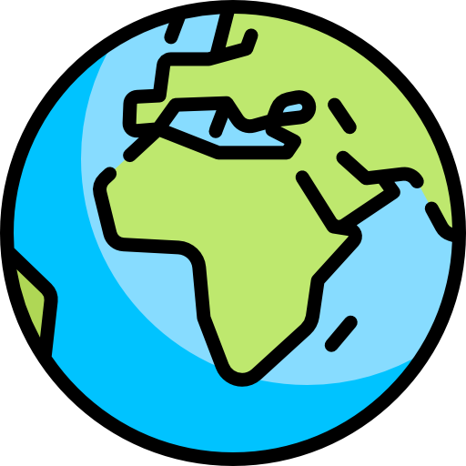


<!DOCTYPE html>
<html>

<head>
  <meta charset="UTF-8">
  <title>İspark Otoparklarına Ait Bilgiler</title>
  <meta name="viewport" content="width=device-width,initial-scale=1.0">
  <meta http-equiv="X-UA-Compatible" content="ie=edge">
  <link rel="icon" href="src/img/yusufalbeni.png">
  <link rel="stylesheet" href="src/css/leaflet.css">
  <link rel="stylesheet" href="src/css/MarkerCluster.Default.css">
  <script src="src/js/leaflet.js"></script>
  <script src="src/js/leaflet.markercluster-src.js" type="text/javascript"></script>
  <script src="src/js/ispark.js" type="text/javascript"></script>
  <script src="src/js/istanbul_ilceler.js" type="text/javascript"></script>
</head>

<body>

  <div id="map" style="position: absolute; top: 0; right: 0; bottom: 0; left: 0; height:100vh;"></div>

  <script>
    var map = L.map('map', {
      zoomControl: false
    }).setView([41.099864, 28.999999], 10, );

    var layer1 = L.tileLayer('http://{s}.basemaps.cartocdn.com/light_all/{z}/{x}/{y}.png')
    var layer2 = L.tileLayer('https://mt1.google.com/vt/lyrs=s&x={x}&y={y}&z={z}')
    var layer3 = L.tileLayer('http://{s}.basemaps.cartocdn.com/dark_all/{z}/{x}/{y}.png')


    var baseMaps = {
      "Temel": layer1,
      "Uydu": layer2,
      "Gece": layer3
    };

    L.control.layers(baseMaps, null, {
      collapsed: false,
      position: 'bottomleft'
    }).addTo(map);
    layer1.addTo(map);


    var info = L.control();

    info.onAdd = function(map) {
      this._div = L.DomUtil.create('div', 'info');
      this.update();
      return this._div;
    };

    info.update = function(props) {
      this._div.innerHTML = '<h4>İSPARK OTOPARKLARINA AİT BİLGİLER</h4>' + '<b>Bir Otopark Seçin</b>';
    };

    info.addTo(map);

    var north = L.control({
      position: "bottomright"
    });
    north.onAdd = function(map) {
      var div = L.DomUtil.create("div", "info legend");
      div.innerHTML = '<a href="https://yusufalbeni.me"target="_blank">';
      return div;
    }
    north.addTo(map);

    var parking = L.icon({
      iconUrl: 'src/img/parking.png',
      iconSize: [48, 48],
      iconAnchor: [15, 28],
      popupAnchor: [-4, -35]
    });

    var otoparklar = L.geoJSON(ispark, {
      pointToLayer: function(feature, latlng) {
        return L.marker(latlng, {
          icon: parking
        });
      },
      onEachFeature: function(feature, layer) {
        layer.bindPopup('<h2>' + feature.properties.parkadi + '</h2><b>Park Kapasitesi:</b> ' + feature.properties.parkkapasitesi + '<p><b>Park Tipi:</b> ' + feature.properties.parktipi + '</p><p><b>Çalışma Saatleri:</b> ' + feature.properties
          .calismasaatleri + '</p><p><b>İlçe:</b> ' + feature.properties.ilce + '</p><p><b>Adres:</b> ' + feature.properties.Adres + '</p><p><b>Aylık Abonelik Ücreti:</b>' + feature.properties.ucret +
          '</p><p><b>Ücretsiz Parklanma Süresi (dakika):</b>' + feature
          .properties.parklanma + '</p><p><b>Tarifesi (₺):</b> ' + feature.properties.Tarifesi + '</p>');
      }
    });
    var markers = new L.MarkerClusterGroup();
    markers.addLayer(otoparklar);
    map.addLayer(markers);
  </script>

</body>

</html>
